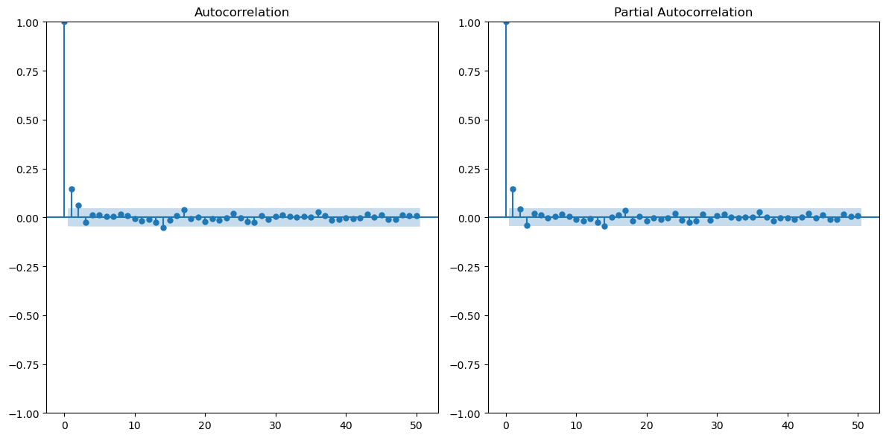

<!DOCTYPE html>


<html lang="en" data-content_root="./" >

  <head>
    <meta charset="utf-8" />
    <meta name="viewport" content="width=device-width, initial-scale=1.0" /><meta name="viewport" content="width=device-width, initial-scale=1" />

    <title>Task List &#8212; EBGN594 HW</title>
  
  
  
  <script data-cfasync="false">
    document.documentElement.dataset.mode = localStorage.getItem("mode") || "";
    document.documentElement.dataset.theme = localStorage.getItem("theme") || "";
  </script>
  
  <!-- Loaded before other Sphinx assets -->
  <link href="_static/styles/theme.css?digest=dfe6caa3a7d634c4db9b" rel="stylesheet" />
<link href="_static/styles/bootstrap.css?digest=dfe6caa3a7d634c4db9b" rel="stylesheet" />
<link href="_static/styles/pydata-sphinx-theme.css?digest=dfe6caa3a7d634c4db9b" rel="stylesheet" />

  
  <link href="_static/vendor/fontawesome/6.5.2/css/all.min.css?digest=dfe6caa3a7d634c4db9b" rel="stylesheet" />
  <link rel="preload" as="font" type="font/woff2" crossorigin href="_static/vendor/fontawesome/6.5.2/webfonts/fa-solid-900.woff2" />
<link rel="preload" as="font" type="font/woff2" crossorigin href="_static/vendor/fontawesome/6.5.2/webfonts/fa-brands-400.woff2" />
<link rel="preload" as="font" type="font/woff2" crossorigin href="_static/vendor/fontawesome/6.5.2/webfonts/fa-regular-400.woff2" />

    <link rel="stylesheet" type="text/css" href="_static/pygments.css?v=fa44fd50" />
    <link rel="stylesheet" type="text/css" href="_static/styles/sphinx-book-theme.css?v=a3416100" />
    <link rel="stylesheet" type="text/css" href="_static/togglebutton.css?v=13237357" />
    <link rel="stylesheet" type="text/css" href="_static/copybutton.css?v=76b2166b" />
    <link rel="stylesheet" type="text/css" href="_static/mystnb.4510f1fc1dee50b3e5859aac5469c37c29e427902b24a333a5f9fcb2f0b3ac41.css?v=be8a1c11" />
    <link rel="stylesheet" type="text/css" href="_static/sphinx-thebe.css?v=4fa983c6" />
    <link rel="stylesheet" type="text/css" href="_static/sphinx-design.min.css?v=95c83b7e" />
  
  <!-- Pre-loaded scripts that we'll load fully later -->
  <link rel="preload" as="script" href="_static/scripts/bootstrap.js?digest=dfe6caa3a7d634c4db9b" />
<link rel="preload" as="script" href="_static/scripts/pydata-sphinx-theme.js?digest=dfe6caa3a7d634c4db9b" />
  <script src="_static/vendor/fontawesome/6.5.2/js/all.min.js?digest=dfe6caa3a7d634c4db9b"></script>

    <script src="_static/documentation_options.js?v=9eb32ce0"></script>
    <script src="_static/doctools.js?v=9a2dae69"></script>
    <script src="_static/sphinx_highlight.js?v=dc90522c"></script>
    <script src="_static/clipboard.min.js?v=a7894cd8"></script>
    <script src="_static/copybutton.js?v=f281be69"></script>
    <script src="_static/scripts/sphinx-book-theme.js?v=887ef09a"></script>
    <script>let toggleHintShow = 'Click to show';</script>
    <script>let toggleHintHide = 'Click to hide';</script>
    <script>let toggleOpenOnPrint = 'true';</script>
    <script src="_static/togglebutton.js?v=4a39c7ea"></script>
    <script>var togglebuttonSelector = '.toggle, .admonition.dropdown';</script>
    <script src="_static/design-tabs.js?v=f930bc37"></script>
    <script>const THEBE_JS_URL = "https://unpkg.com/thebe@0.8.2/lib/index.js"; const thebe_selector = ".thebe,.cell"; const thebe_selector_input = "pre"; const thebe_selector_output = ".output, .cell_output"</script>
    <script async="async" src="_static/sphinx-thebe.js?v=c100c467"></script>
    <script>var togglebuttonSelector = '.toggle, .admonition.dropdown';</script>
    <script>const THEBE_JS_URL = "https://unpkg.com/thebe@0.8.2/lib/index.js"; const thebe_selector = ".thebe,.cell"; const thebe_selector_input = "pre"; const thebe_selector_output = ".output, .cell_output"</script>
    <script>window.MathJax = {"options": {"processHtmlClass": "tex2jax_process|mathjax_process|math|output_area"}}</script>
    <script defer="defer" src="https://cdn.jsdelivr.net/npm/mathjax@3/es5/tex-mml-chtml.js"></script>
    <script>DOCUMENTATION_OPTIONS.pagename = 'hw2';</script>
    <link rel="index" title="Index" href="genindex.html" />
    <link rel="search" title="Search" href="search.html" />
  <meta name="viewport" content="width=device-width, initial-scale=1"/>
  <meta name="docsearch:language" content="en"/>
  </head>
  
  
  <body data-bs-spy="scroll" data-bs-target=".bd-toc-nav" data-offset="180" data-bs-root-margin="0px 0px -60%" data-default-mode="">

  
  
  <div id="pst-skip-link" class="skip-link d-print-none"><a href="#main-content">Skip to main content</a></div>
  
  <div id="pst-scroll-pixel-helper"></div>
  
  <button type="button" class="btn rounded-pill" id="pst-back-to-top">
    <i class="fa-solid fa-arrow-up"></i>Back to top</button>

  
  <input type="checkbox"
          class="sidebar-toggle"
          id="pst-primary-sidebar-checkbox"/>
  <label class="overlay overlay-primary" for="pst-primary-sidebar-checkbox"></label>
  
  <input type="checkbox"
          class="sidebar-toggle"
          id="pst-secondary-sidebar-checkbox"/>
  <label class="overlay overlay-secondary" for="pst-secondary-sidebar-checkbox"></label>
  
  <div class="search-button__wrapper">
    <div class="search-button__overlay"></div>
    <div class="search-button__search-container">
<form class="bd-search d-flex align-items-center"
      action="search.html"
      method="get">
  <i class="fa-solid fa-magnifying-glass"></i>
  <input type="search"
         class="form-control"
         name="q"
         id="search-input"
         placeholder="Search..."
         aria-label="Search..."
         autocomplete="off"
         autocorrect="off"
         autocapitalize="off"
         spellcheck="false"/>
  <span class="search-button__kbd-shortcut"><kbd class="kbd-shortcut__modifier">Ctrl</kbd>+<kbd>K</kbd></span>
</form></div>
  </div>

  <div class="pst-async-banner-revealer d-none">
  <aside id="bd-header-version-warning" class="d-none d-print-none" aria-label="Version warning"></aside>
</div>

  
    <header class="bd-header navbar navbar-expand-lg bd-navbar d-print-none">
    </header>
  

  <div class="bd-container">
    <div class="bd-container__inner bd-page-width">
      
      
      
        
      
      <div class="bd-sidebar-primary bd-sidebar">
        

  
  <div class="sidebar-header-items sidebar-primary__section">
    
    
    
    
  </div>
  
    <div class="sidebar-primary-items__start sidebar-primary__section">
        <div class="sidebar-primary-item">

  
    
  

<a class="navbar-brand logo" href="intro.html">
  
  
  
  
  
    
    
      
    
    
    
    <script>document.write(``);</script>
  
  
</a></div>
        <div class="sidebar-primary-item">

 <script>
 document.write(`
   <button class="btn search-button-field search-button__button" title="Search" aria-label="Search" data-bs-placement="bottom" data-bs-toggle="tooltip">
    <i class="fa-solid fa-magnifying-glass"></i>
    <span class="search-button__default-text">Search</span>
    <span class="search-button__kbd-shortcut"><kbd class="kbd-shortcut__modifier">Ctrl</kbd>+<kbd class="kbd-shortcut__modifier">K</kbd></span>
   </button>
 `);
 </script></div>
        <div class="sidebar-primary-item"><nav class="bd-links bd-docs-nav" aria-label="Main">
    <div class="bd-toc-item navbar-nav active">
        <ul class="nav bd-sidenav">
<li class="toctree-l1"><a class="reference internal" href="hw1.html">HW1</a></li>
</ul>

    </div>
</nav></div>
    </div>
  
  
  <div class="sidebar-primary-items__end sidebar-primary__section">
  </div>
  
  <div id="rtd-footer-container"></div>


      </div>
      
      <main id="main-content" class="bd-main" role="main">
        
        

<div class="sbt-scroll-pixel-helper"></div>

          <div class="bd-content">
            <div class="bd-article-container">
              
              <div class="bd-header-article d-print-none">
<div class="header-article-items header-article__inner">
  
    <div class="header-article-items__start">
      
        <div class="header-article-item"><button class="sidebar-toggle primary-toggle btn btn-sm" title="Toggle primary sidebar" data-bs-placement="bottom" data-bs-toggle="tooltip">
  <span class="fa-solid fa-bars"></span>
</button></div>
      
    </div>
  
  
    <div class="header-article-items__end">
      
        <div class="header-article-item">

<div class="article-header-buttons">


<div class="dropdown dropdown-download-buttons">
  <button class="btn dropdown-toggle" type="button" data-bs-toggle="dropdown" aria-expanded="false" aria-label="Download this page">
    <i class="fas fa-download"></i>
  </button>
  <ul class="dropdown-menu">
      
      
      
      <li><a href="_sources/hw2.ipynb" target="_blank"
   class="btn btn-sm btn-download-source-button dropdown-item"
   title="Download source file"
   data-bs-placement="left" data-bs-toggle="tooltip"
>
  

<span class="btn__icon-container">
  <i class="fas fa-file"></i>
  </span>
<span class="btn__text-container">.ipynb</span>
</a>
</li>
      
      
      
      
      <li>
<button onclick="window.print()"
  class="btn btn-sm btn-download-pdf-button dropdown-item"
  title="Print to PDF"
  data-bs-placement="left" data-bs-toggle="tooltip"
>
  

<span class="btn__icon-container">
  <i class="fas fa-file-pdf"></i>
  </span>
<span class="btn__text-container">.pdf</span>
</button>
</li>
      
  </ul>
</div>


<button onclick="toggleFullScreen()"
  class="btn btn-sm btn-fullscreen-button"
  title="Fullscreen mode"
  data-bs-placement="bottom" data-bs-toggle="tooltip"
>
  

<span class="btn__icon-container">
  <i class="fas fa-expand"></i>
  </span>

</button>


<script>
document.write(`
  <button class="btn btn-sm nav-link pst-navbar-icon theme-switch-button" title="light/dark" aria-label="light/dark" data-bs-placement="bottom" data-bs-toggle="tooltip">
    <i class="theme-switch fa-solid fa-sun fa-lg" data-mode="light"></i>
    <i class="theme-switch fa-solid fa-moon fa-lg" data-mode="dark"></i>
    <i class="theme-switch fa-solid fa-circle-half-stroke fa-lg" data-mode="auto"></i>
  </button>
`);
</script>


<script>
document.write(`
  <button class="btn btn-sm pst-navbar-icon search-button search-button__button" title="Search" aria-label="Search" data-bs-placement="bottom" data-bs-toggle="tooltip">
    <i class="fa-solid fa-magnifying-glass fa-lg"></i>
  </button>
`);
</script>
<button class="sidebar-toggle secondary-toggle btn btn-sm" title="Toggle secondary sidebar" data-bs-placement="bottom" data-bs-toggle="tooltip">
    <span class="fa-solid fa-list"></span>
</button>
</div></div>
      
    </div>
  
</div>
</div>
              
              

<div id="jb-print-docs-body" class="onlyprint">
    <h1>Task List</h1>
    <!-- Table of contents -->
    <div id="print-main-content">
        <div id="jb-print-toc">
            
            <div>
                <h2> Contents </h2>
            </div>
            <nav aria-label="Page">
                <ul class="visible nav section-nav flex-column">
<li class="toc-h1 nav-item toc-entry"><a class="reference internal nav-link" href="#">Task List</a><ul class="visible nav section-nav flex-column">
<li class="toc-h2 nav-item toc-entry"><a class="reference internal nav-link" href="#id1">1.</a></li>
<li class="toc-h2 nav-item toc-entry"><a class="reference internal nav-link" href="#id2">2.</a></li>
<li class="toc-h2 nav-item toc-entry"><a class="reference internal nav-link" href="#id3">3.</a></li>
<li class="toc-h2 nav-item toc-entry"><a class="reference internal nav-link" href="#id4">4.</a></li>
<li class="toc-h2 nav-item toc-entry"><a class="reference internal nav-link" href="#id5">5.</a></li>
<li class="toc-h2 nav-item toc-entry"><a class="reference internal nav-link" href="#id6">6.</a></li>
</ul>
</li>
<li class="toc-h1 nav-item toc-entry"><a class="reference internal nav-link" href="#hw2">HW2</a><ul class="visible nav section-nav flex-column">
<li class="toc-h2 nav-item toc-entry"><a class="reference internal nav-link" href="#unit-root-testing">1. Unit Root Testing</a><ul class="nav section-nav flex-column">
<li class="toc-h3 nav-item toc-entry"><a class="reference internal nav-link" href="#adf-for-all-series">ADF For All Series</a></li>
</ul>
</li>
<li class="toc-h2 nav-item toc-entry"><a class="reference internal nav-link" href="#arima-model">2. ARIMA Model</a><ul class="nav section-nav flex-column">
<li class="toc-h3 nav-item toc-entry"><a class="reference internal nav-link" href="#acf-and-pacf">ACF and PACF</a></li>
<li class="toc-h3 nav-item toc-entry"><a class="reference internal nav-link" href="#model-selection">Model Selection</a></li>
</ul>
</li>
<li class="toc-h2 nav-item toc-entry"><a class="reference internal nav-link" href="#arima-forecast">3. ARIMA Forecast</a></li>
<li class="toc-h2 nav-item toc-entry"><a class="reference internal nav-link" href="#handling-residuals">4. Handling Residuals</a></li>
</ul>
</li>
</ul>

            </nav>
        </div>
    </div>
</div>

              
                
<div id="searchbox"></div>
                <article class="bd-article">
                  
  <section id="task-list">
<h1>Task List<a class="headerlink" href="#task-list" title="Link to this heading">#</a></h1>
<section id="id1">
<h2>1.<a class="headerlink" href="#id1" title="Link to this heading">#</a></h2>
<ul class="contains-task-list simple">
<li class="task-list-item"><p><input class="task-list-item-checkbox" checked="checked" disabled="disabled" type="checkbox"> Univariate ADF for all variables and decide whether differencing/log-differencing is required. State which one used and why and put results into sentences.</p></li>
<li class="task-list-item"><p><input class="task-list-item-checkbox" disabled="disabled" type="checkbox"> For outcome variable, report more detailed ADF and CADF as follows:</p>
<ul class="contains-task-list">
<li class="task-list-item"><p><input class="task-list-item-checkbox" disabled="disabled" type="checkbox"> Decide whether to use Case 4 or 2. Write equations for hypothesis tests, null and alternative hypotheses, and provide evidence whether to accept or reject.</p></li>
<li class="task-list-item"><p><input class="task-list-item-checkbox" disabled="disabled" type="checkbox"> Was there a unit root? Was there a drift or trend or neither?</p></li>
<li class="task-list-item"><p><input class="task-list-item-checkbox" disabled="disabled" type="checkbox"> For the CADF test, include your main explanatory variables (or their stationary transformations if required) in the test regression.</p></li>
<li class="task-list-item"><p><input class="task-list-item-checkbox" disabled="disabled" type="checkbox">  Do the ADF and CADF test agree or give conflicting results? Based on the results of the test(s), should you difference the data before moving on or not?</p></li>
</ul>
</li>
</ul>
</section>
<section id="id2">
<h2>2.<a class="headerlink" href="#id2" title="Link to this heading">#</a></h2>
<ul class="contains-task-list simple">
<li class="task-list-item"><p><input class="task-list-item-checkbox" checked="checked" disabled="disabled" type="checkbox"> Used transformed data to build univariate ARIMA model for stationary outcome variable.</p></li>
<li class="task-list-item"><p><input class="task-list-item-checkbox" checked="checked" disabled="disabled" type="checkbox"> State and report the selection criteria you used (AIC/BIC, Q-test on residuals, etc.) and any model checking/refining that you performed (e.g., dropping insignificant coefficients, etc.)</p></li>
<li class="task-list-item"><p><input class="task-list-item-checkbox" checked="checked" disabled="disabled" type="checkbox"> Write out the final estimated model as a linear equation AND in lag polynomial form</p></li>
</ul>
</section>
<section id="id3">
<h2>3.<a class="headerlink" href="#id3" title="Link to this heading">#</a></h2>
<ul class="contains-task-list simple">
<li class="task-list-item"><p><input class="task-list-item-checkbox" checked="checked" disabled="disabled" type="checkbox"> Forecast your model on a hold-out sample and plot the forecast along with the realized series for
comparison.</p></li>
</ul>
</section>
<section id="id4">
<h2>4.<a class="headerlink" href="#id4" title="Link to this heading">#</a></h2>
<ul class="contains-task-list simple">
<li class="task-list-item"><p><input class="task-list-item-checkbox" checked="checked" disabled="disabled" type="checkbox"> First, estimate a model for the relationship between the stationary outcome variable and the stationary versions of the main explanatory variables using OLS</p></li>
<li class="task-list-item"><p><input class="task-list-item-checkbox" checked="checked" disabled="disabled" type="checkbox"> Second, estimate the regression model while fitting an ARMA model to the residuals</p></li>
<li class="task-list-item"><p><input class="task-list-item-checkbox" checked="checked" disabled="disabled" type="checkbox"> Third, either (1) add lags of Y and/or X’s using dynlm() until the residual autocorrelation is reduced, or (2) use HAC/Newey-West standard errors.</p></li>
<li class="task-list-item"><p><input class="task-list-item-checkbox" checked="checked" disabled="disabled" type="checkbox"> Compare estimates of the coefficients and standard errors on the two or three main explanatory variables from these three approaches</p></li>
<li class="task-list-item"><p><input class="task-list-item-checkbox" disabled="disabled" type="checkbox"> For your preferred model among the above, provide evidence for whether or not there is autocorrelation remaining in the residuals</p></li>
<li class="task-list-item"><p><input class="task-list-item-checkbox" disabled="disabled" type="checkbox"> Write out the equation(s) for the model including any model equation for the residuals if applicable.</p></li>
</ul>
</section>
<section id="id5">
<h2>5.<a class="headerlink" href="#id5" title="Link to this heading">#</a></h2>
<ul class="contains-task-list simple">
<li class="task-list-item"><p><input class="task-list-item-checkbox" disabled="disabled" type="checkbox"> Should your model be interpreted as the causal effect of your X variable(s) on Y, or a predictive/correlational relationship? In other words, do we have reason to believe the X variable(s) are
exogenous to Y or are they jointly determined with Y as the equilibrium of some market process orphysical process?</p></li>
<li class="task-list-item"><p><input class="task-list-item-checkbox" disabled="disabled" type="checkbox"> Are there important omitted variables that might be correlated with both X and
Y, i.e., is X picking up the effect of some other related variable that’s not in the model? Feel free to speculate, but be thoughtful.</p></li>
</ul>
</section>
<section id="id6">
<h2>6.<a class="headerlink" href="#id6" title="Link to this heading">#</a></h2>
<ul class="contains-task-list simple">
<li class="task-list-item"><p><input class="task-list-item-checkbox" disabled="disabled" type="checkbox"> . Suppose you thought the answer to (5) should be “Yes, these are causal effects”. Now run a regression of
the stationary version of your outcome variable on the stationary version of your additional one or two minor explanatory variables.</p></li>
<li class="task-list-item"><p><input class="task-list-item-checkbox" disabled="disabled" type="checkbox"> Then run a second regression including all of the explanatory variables (both the two or three major ones and the one or two additional ones).</p></li>
<li class="task-list-item"><p><input class="task-list-item-checkbox" disabled="disabled" type="checkbox">  Discuss the differences in results between these regressions in terms of changes in magnitude and statistical significance of the
less important regressors when you add/subtract the more important regressors.</p></li>
<li class="task-list-item"><p><input class="task-list-item-checkbox" disabled="disabled" type="checkbox">  When you omit the most important regressors, could the relatively minor ones capture some of this variation and “appear’ ’
to be important, but could their importance go away once you control for the big ones? Give a brief discussion of what you think is going on.</p></li>
</ul>
</section>
</section>
<section class="tex2jax_ignore mathjax_ignore" id="hw2">
<h1>HW2<a class="headerlink" href="#hw2" title="Link to this heading">#</a></h1>
<p>For this assignment I will be using a dataset of historical prices for electricity futures in MISO and PJM markets at their central hubs, respectively. More specifically, we will be using a target variable of MISO/PJM Real-time Locational Marginal Pricing (RTLMP) spread denoted in ($/MWh), that is the diffrence in price for electricity futures between MISO and PJMC. We will be examining the relationship of price spread with several independent variables, which are listed below. Note that each variable is a daily average price/physical quantity.</p>
<ul class="simple">
<li><p>MISO/PJMC Real-time Congestion - Difference between RT congestion between MISO and PJMC ($/MWh)</p></li>
<li><p>MISO/PJMC Real-time Load - Difference between RT load between MISO and PJMC (MW)</p></li>
<li><p>MISO/PJMC Net Load - Difference between Net Load between MISO and PJMC (MW)</p></li>
</ul>
<p>In addition, the following ancillary variables will be included for the analysis</p>
<ul class="simple">
<li><p>PJMC Load Difference - Difference between RT load and forecasted load for PJM (MW)</p></li>
<li><p>MISO Load Difference - Difference between RT load and forecasted load for MISO (MW)</p></li>
</ul>
<div class="cell tag_hide-input docutils container">
<details class="hide above-input">
<summary aria-label="Toggle hidden content">
<span class="collapsed">Show code cell source</span>
<span class="expanded">Hide code cell source</span>
</summary>
<div class="cell_input docutils container">
<div class="highlight-ipython3 notranslate"><div class="highlight"><pre><span></span><span class="c1"># Numerical/Statistical Libraries</span>
<span class="kn">import</span> <span class="nn">pandas</span> <span class="k">as</span> <span class="nn">pd</span>
<span class="kn">import</span> <span class="nn">scipy</span> <span class="k">as</span> <span class="nn">sp</span>
<span class="kn">import</span> <span class="nn">numpy</span> <span class="k">as</span> <span class="nn">np</span>
<span class="kn">import</span> <span class="nn">statsmodels.api</span> <span class="k">as</span> <span class="nn">sm</span> 
<span class="kn">from</span> <span class="nn">statsmodels.graphics.tsaplots</span> <span class="kn">import</span> <span class="n">plot_acf</span><span class="p">,</span> <span class="n">plot_pacf</span>
<span class="kn">from</span> <span class="nn">statsmodels.tsa.arima.model</span> <span class="kn">import</span> <span class="n">ARIMA</span>
<span class="kn">from</span> <span class="nn">statsmodels.tsa.stattools</span> <span class="kn">import</span> <span class="n">adfuller</span> <span class="k">as</span> <span class="n">adf</span>
<span class="kn">from</span> <span class="nn">statsmodels.regression.linear_model</span> <span class="kn">import</span> <span class="n">OLS</span><span class="p">,</span> <span class="n">OLSResults</span>
<span class="kn">from</span> <span class="nn">sklearn.model_selection</span> <span class="kn">import</span> <span class="n">train_test_split</span>

<span class="c1"># Plotting Libraries</span>
<span class="kn">import</span> <span class="nn">matplotlib</span>
<span class="kn">from</span> <span class="nn">matplotlib</span> <span class="kn">import</span> <span class="n">pyplot</span> <span class="k">as</span> <span class="n">plt</span>
<span class="kn">import</span> <span class="nn">seaborn</span> <span class="k">as</span> <span class="nn">sns</span>

<span class="c1"># Various Utilities</span>
<span class="kn">import</span> <span class="nn">warnings</span>
</pre></div>
</div>
</div>
</details>
</div>
<div class="cell tag_hide-input docutils container">
<details class="hide above-input">
<summary aria-label="Toggle hidden content">
<span class="collapsed">Show code cell source</span>
<span class="expanded">Hide code cell source</span>
</summary>
<div class="cell_input docutils container">
<div class="highlight-ipython3 notranslate"><div class="highlight"><pre><span></span><span class="n">warnings</span><span class="o">.</span><span class="n">filterwarnings</span><span class="p">(</span><span class="s1">&#39;ignore&#39;</span><span class="p">)</span>
</pre></div>
</div>
</div>
</details>
</div>
<div class="cell tag_hide-input docutils container">
<details class="hide above-input">
<summary aria-label="Toggle hidden content">
<span class="collapsed">Show code cell source</span>
<span class="expanded">Hide code cell source</span>
</summary>
<div class="cell_input docutils container">
<div class="highlight-ipython3 notranslate"><div class="highlight"><pre><span></span><span class="c1"># Reading in data and preparing relevant data for analysis.</span>
<span class="n">data</span> <span class="o">=</span> <span class="n">pd</span><span class="o">.</span><span class="n">read_csv</span><span class="p">(</span><span class="sa">r</span><span class="s2">&quot;C:\Users\Jared\OneDrive\Mines\FALL2024\EBGN594\MISO_PJM_data\atc_data.csv&quot;</span><span class="p">)</span>

<span class="c1"># Strip whitespace from column names</span>
<span class="n">data</span><span class="o">.</span><span class="n">columns</span> <span class="o">=</span> <span class="n">data</span><span class="o">.</span><span class="n">columns</span><span class="o">.</span><span class="n">str</span><span class="o">.</span><span class="n">strip</span><span class="p">()</span>

<span class="n">subset_columns</span> <span class="o">=</span> <span class="p">[</span>
    <span class="s1">&#39;DATE&#39;</span><span class="p">,</span>
    <span class="s1">&#39;MISO/PJMC RTLMP&#39;</span><span class="p">,</span> 
    <span class="s1">&#39;MISO/PJMC RT CONG&#39;</span><span class="p">,</span> 
    <span class="s1">&#39;MISO/PJMC RT LOAD&#39;</span><span class="p">,</span> 
    <span class="s1">&#39;MISO/PJM Net Load&#39;</span><span class="p">,</span> 
    <span class="s1">&#39;PJM LOAD DIFF&#39;</span><span class="p">,</span> 
    <span class="s1">&#39;MISO LOAD DIFF&#39;</span>
<span class="p">]</span>

<span class="c1"># Setting index to be a datetime index</span>
<span class="n">data</span><span class="p">[</span><span class="s1">&#39;Date&#39;</span><span class="p">]</span> <span class="o">=</span> <span class="n">pd</span><span class="o">.</span><span class="n">to_datetime</span><span class="p">(</span><span class="n">data</span><span class="p">[</span><span class="s1">&#39;DATE&#39;</span><span class="p">])</span>  
<span class="n">data</span><span class="o">.</span><span class="n">set_index</span><span class="p">(</span><span class="s1">&#39;Date&#39;</span><span class="p">,</span> <span class="n">inplace</span><span class="o">=</span><span class="kc">True</span><span class="p">)</span>  

<span class="c1"># Create the subset of data with the relevant columns</span>
<span class="n">data</span> <span class="o">=</span> <span class="n">data</span><span class="p">[</span><span class="n">subset_columns</span><span class="p">]</span>
</pre></div>
</div>
</div>
</details>
</div>
<section id="unit-root-testing">
<h2>1. Unit Root Testing<a class="headerlink" href="#unit-root-testing" title="Link to this heading">#</a></h2>
<section id="adf-for-all-series">
<h3>ADF For All Series<a class="headerlink" href="#adf-for-all-series" title="Link to this heading">#</a></h3>
<p>The cell below outputs the results of the Augmented Dickey-Fuller (ADF) test for each data series. We test for a unit root using the following hypothesis test:</p>
<div class="amsmath math notranslate nohighlight">
\[\begin{align*}
    H_0: \text{The data has a unit root (nonstationary)} \\
    H_a: \text{The data does not have a unit root (stationary)}
\end{align*}\]</div>
<p>We use the p-values calculated by running the ADF test to determine whether the data is stationary. As can be seen by the table, <strong>all the series have negligible p-values</strong>. Since all of the p-values are less than .05, we can <strong>reject the null hypothesis for every series on a 95% confidence interval</strong>, which indicates that all data series are stationary. No differencing is required to make the data stationary</p>
<div class="cell tag_hide-input docutils container">
<details class="hide above-input">
<summary aria-label="Toggle hidden content">
<span class="collapsed">Show code cell source</span>
<span class="expanded">Hide code cell source</span>
</summary>
<div class="cell_input docutils container">
<div class="highlight-ipython3 notranslate"><div class="highlight"><pre><span></span><span class="n">adf_results_list</span> <span class="o">=</span> <span class="p">[]</span>

<span class="c1"># Loop through each column in the dataset and compute the ADF test</span>
<span class="k">for</span> <span class="n">column</span> <span class="ow">in</span> <span class="n">data</span><span class="o">.</span><span class="n">columns</span><span class="p">[</span><span class="mi">1</span><span class="p">:]:</span>
    <span class="n">result</span> <span class="o">=</span> <span class="n">adf</span><span class="p">(</span><span class="n">data</span><span class="p">[</span><span class="n">column</span><span class="p">])</span>
    <span class="n">adf_results_list</span><span class="o">.</span><span class="n">append</span><span class="p">({</span>
        <span class="s1">&#39;Series&#39;</span><span class="p">:</span> <span class="n">column</span><span class="p">,</span>
        <span class="s1">&#39;Test Statistic&#39;</span><span class="p">:</span> <span class="n">result</span><span class="p">[</span><span class="mi">0</span><span class="p">],</span>
        <span class="s1">&#39;p-value&#39;</span><span class="p">:</span> <span class="n">result</span><span class="p">[</span><span class="mi">1</span><span class="p">],</span>
        <span class="s1">&#39;Lags Used&#39;</span><span class="p">:</span> <span class="n">result</span><span class="p">[</span><span class="mi">2</span><span class="p">],</span>
        <span class="s1">&#39;Observations Used&#39;</span><span class="p">:</span> <span class="n">result</span><span class="p">[</span><span class="mi">3</span><span class="p">],</span>
        <span class="s1">&#39;1% Critical Value&#39;</span><span class="p">:</span> <span class="n">result</span><span class="p">[</span><span class="mi">4</span><span class="p">][</span><span class="s1">&#39;1%&#39;</span><span class="p">],</span>
        <span class="s1">&#39;5% Critical Value&#39;</span><span class="p">:</span> <span class="n">result</span><span class="p">[</span><span class="mi">4</span><span class="p">][</span><span class="s1">&#39;5%&#39;</span><span class="p">],</span>
        <span class="s1">&#39;10% Critical Value&#39;</span><span class="p">:</span> <span class="n">result</span><span class="p">[</span><span class="mi">4</span><span class="p">][</span><span class="s1">&#39;10%&#39;</span><span class="p">],</span>
        <span class="s1">&#39;Max Information Criterion&#39;</span><span class="p">:</span> <span class="n">result</span><span class="p">[</span><span class="mi">5</span><span class="p">]</span>
    <span class="p">})</span>

<span class="n">adf_df</span> <span class="o">=</span> <span class="n">pd</span><span class="o">.</span><span class="n">DataFrame</span><span class="p">(</span><span class="n">adf_results_list</span><span class="p">)</span>

<span class="n">y</span><span class="o">=</span><span class="n">data</span><span class="p">[</span><span class="s1">&#39;MISO/PJMC RTLMP&#39;</span><span class="p">]</span>
<span class="n">adf_df</span>
</pre></div>
</div>
</div>
</details>
<div class="cell_output docutils container">
<div class="output text_html"><div>
<style scoped>
    .dataframe tbody tr th:only-of-type {
        vertical-align: middle;
    }

    .dataframe tbody tr th {
        vertical-align: top;
    }

    .dataframe thead th {
        text-align: right;
    }
</style>
<table border="1" class="dataframe">
  <thead>
    <tr style="text-align: right;">
      <th></th>
      <th>Series</th>
      <th>Test Statistic</th>
      <th>p-value</th>
      <th>Lags Used</th>
      <th>Observations Used</th>
      <th>1% Critical Value</th>
      <th>5% Critical Value</th>
      <th>10% Critical Value</th>
      <th>Max Information Criterion</th>
    </tr>
  </thead>
  <tbody>
    <tr>
      <th>0</th>
      <td>MISO/PJMC RTLMP</td>
      <td>-23.659790</td>
      <td>0.000000e+00</td>
      <td>2</td>
      <td>1825</td>
      <td>-3.433938</td>
      <td>-2.863125</td>
      <td>-2.567614</td>
      <td>14726.005259</td>
    </tr>
    <tr>
      <th>1</th>
      <td>MISO/PJMC RT CONG</td>
      <td>-8.933435</td>
      <td>9.676098e-15</td>
      <td>10</td>
      <td>1817</td>
      <td>-3.433954</td>
      <td>-2.863132</td>
      <td>-2.567618</td>
      <td>13078.776148</td>
    </tr>
    <tr>
      <th>2</th>
      <td>MISO/PJMC RT LOAD</td>
      <td>-6.067498</td>
      <td>1.172210e-07</td>
      <td>12</td>
      <td>1815</td>
      <td>-3.433958</td>
      <td>-2.863134</td>
      <td>-2.567618</td>
      <td>34245.632290</td>
    </tr>
    <tr>
      <th>3</th>
      <td>MISO/PJM Net Load</td>
      <td>-11.358989</td>
      <td>9.576794e-21</td>
      <td>5</td>
      <td>1822</td>
      <td>-3.433944</td>
      <td>-2.863128</td>
      <td>-2.567615</td>
      <td>34239.612843</td>
    </tr>
    <tr>
      <th>4</th>
      <td>PJM LOAD DIFF</td>
      <td>-4.874092</td>
      <td>3.915836e-05</td>
      <td>15</td>
      <td>1812</td>
      <td>-3.433964</td>
      <td>-2.863136</td>
      <td>-2.567620</td>
      <td>22284.817213</td>
    </tr>
    <tr>
      <th>5</th>
      <td>MISO LOAD DIFF</td>
      <td>-5.038647</td>
      <td>1.859916e-05</td>
      <td>21</td>
      <td>1806</td>
      <td>-3.433976</td>
      <td>-2.863142</td>
      <td>-2.567623</td>
      <td>30273.105610</td>
    </tr>
  </tbody>
</table>
</div></div></div>
</div>
</section>
</section>
<section id="arima-model">
<h2>2. ARIMA Model<a class="headerlink" href="#arima-model" title="Link to this heading">#</a></h2>
<section id="acf-and-pacf">
<h3>ACF and PACF<a class="headerlink" href="#acf-and-pacf" title="Link to this heading">#</a></h3>
<p>First, we plot the autocorrelation function and partial autocorrelation function to help us determine model parameters. As can be seen in the chart below, there is a significant spike on both charts and p=q=1 that lies outside of the 95% confidence interval. We will use these as parameters when we create our model. Upon further examination, the <strong>BIC is indeed minimized with ARMA(1,1,1)</strong>, so this model will be used for the rest of the analysis.</p>
<div class="cell tag_hide-input docutils container">
<details class="hide above-input">
<summary aria-label="Toggle hidden content">
<span class="collapsed">Show code cell source</span>
<span class="expanded">Hide code cell source</span>
</summary>
<div class="cell_input docutils container">
<div class="highlight-ipython3 notranslate"><div class="highlight"><pre><span></span><span class="n">fig</span><span class="p">,</span> <span class="n">ax</span> <span class="o">=</span> <span class="n">plt</span><span class="o">.</span><span class="n">subplots</span><span class="p">(</span><span class="mi">1</span><span class="p">,</span> <span class="mi">2</span><span class="p">,</span> <span class="n">figsize</span><span class="o">=</span><span class="p">(</span><span class="mi">12</span><span class="p">,</span> <span class="mi">6</span><span class="p">))</span>
<span class="n">plot_acf</span><span class="p">(</span><span class="n">y</span><span class="p">,</span> <span class="n">lags</span><span class="o">=</span><span class="mi">50</span><span class="p">,</span> <span class="n">ax</span><span class="o">=</span><span class="n">ax</span><span class="p">[</span><span class="mi">0</span><span class="p">])</span>
<span class="n">plot_pacf</span><span class="p">(</span><span class="n">y</span><span class="p">,</span> <span class="n">lags</span><span class="o">=</span><span class="mi">50</span><span class="p">,</span> <span class="n">ax</span><span class="o">=</span><span class="n">ax</span><span class="p">[</span><span class="mi">1</span><span class="p">])</span>

<span class="n">plt</span><span class="o">.</span><span class="n">tight_layout</span><span class="p">()</span>
<span class="n">plt</span><span class="o">.</span><span class="n">show</span><span class="p">()</span>
</pre></div>
</div>
</div>
</details>
<div class="cell_output docutils container">

</div>
</div>
</section>
<section id="model-selection">
<h3>Model Selection<a class="headerlink" href="#model-selection" title="Link to this heading">#</a></h3>
<p>The criterion used to determine the best model parameters is the Bayesian Information Criteria. When we use the ARIMA(1,1,1) model, we obtain a value of 12221.522. This number is quite high, which indicates that the model may still have a poor fit with the data. The estimated parameters for the model, namely the <strong>AR(1) and MA(1) coefficients, are .1488 and -.9996 respectively</strong>. Each of these coefficients have a negligible p-value as well, indicating that they are <strong>most likely statistically significant</strong>. The “Sigma2” coefficient denotes the variance of the residuals. The <strong>variance of residuals is quite high and appears to also be statistically significant</strong>. Some other interesting facts about the model to note are some of the diagnostic tests. The <strong>LB Q-stat has a p-value of .78, which entails that there is a high probability of serial autocorrelation in the model</strong>. The <strong>JB Test Statistic is extremely low with a low p-value</strong>, which means the <strong>residuals are not normally distributed</strong>. Finally, the <strong>p-value for Heteroskedasticity is 0</strong>, which means that the <strong>residuals are most likely heteroskedastic (i.e. the residuals have non-constant variance.)</strong></p>
<p>Note that the results do not include a constant. So the equation for the linear model is as such:</p>
<div class="amsmath math notranslate nohighlight">
\[\begin{align*}
\Delta y_t =.1488 \Delta y_{t-1} - .9996 \epsilon_{t-1} + \epsilon_t
\end{align*}\]</div>
<p>where <span class="math notranslate nohighlight">\(\epsilon_t\)</span> is some white noise term at time <span class="math notranslate nohighlight">\(t\)</span>. Equivalently, the equation in lag polynomial form is</p>
<div class="amsmath math notranslate nohighlight">
\[\begin{align*}
(1-1.1483L+.1483L^2)y_t=(1-.9996L)\epsilon_t
\end{align*}\]</div>
<div class="cell tag_hide-input docutils container">
<details class="hide above-input">
<summary aria-label="Toggle hidden content">
<span class="collapsed">Show code cell source</span>
<span class="expanded">Hide code cell source</span>
</summary>
<div class="cell_input docutils container">
<div class="highlight-ipython3 notranslate"><div class="highlight"><pre><span></span><span class="n">y_train</span><span class="p">,</span><span class="n">y_test</span><span class="o">=</span><span class="n">train_test_split</span><span class="p">(</span><span class="n">data</span><span class="p">[</span><span class="s1">&#39;MISO/PJMC RTLMP&#39;</span><span class="p">],</span><span class="n">test_size</span><span class="o">=</span><span class="mf">.20</span><span class="p">,</span><span class="n">random_state</span><span class="o">=</span><span class="mi">42</span><span class="p">,</span><span class="n">shuffle</span><span class="o">=</span><span class="kc">False</span><span class="p">)</span>

<span class="n">model</span> <span class="o">=</span> <span class="n">ARIMA</span><span class="p">(</span><span class="n">y_train</span><span class="p">,</span> <span class="n">order</span><span class="o">=</span><span class="p">(</span><span class="mi">1</span><span class="p">,</span><span class="mi">1</span><span class="p">,</span><span class="mi">1</span><span class="p">))</span><span class="o">.</span><span class="n">fit</span><span class="p">()</span>

<span class="nb">print</span><span class="p">(</span><span class="n">model</span><span class="o">.</span><span class="n">summary</span><span class="p">())</span>
</pre></div>
</div>
</div>
</details>
<div class="cell_output docutils container">
<div class="output stream highlight-myst-ansi notranslate"><div class="highlight"><pre><span></span>                               SARIMAX Results                                
==============================================================================
Dep. Variable:        MISO/PJMC RTLMP   No. Observations:                 1462
Model:                 ARIMA(1, 1, 1)   Log Likelihood               -6099.831
Date:                Mon, 07 Oct 2024   AIC                          12205.662
Time:                        18:32:47   BIC                          12221.522
Sample:                    05-30-2019   HQIC                         12211.578
                         - 05-30-2023                                         
Covariance Type:                  opg                                         
==============================================================================
                 coef    std err          z      P&gt;|z|      [0.025      0.975]
------------------------------------------------------------------------------
ar.L1          0.1483      0.009     17.063      0.000       0.131       0.165
ma.L1         -0.9996      0.023    -43.596      0.000      -1.045      -0.955
sigma2       246.7027      4.736     52.088      0.000     237.420     255.986
===================================================================================
Ljung-Box (L1) (Q):                   0.08   Jarque-Bera (JB):          31116909.91
Prob(Q):                              0.78   Prob(JB):                         0.00
Heteroskedasticity (H):              28.01   Skew:                            22.93
Prob(H) (two-sided):                  0.00   Kurtosis:                       716.48
===================================================================================

Warnings:
[1] Covariance matrix calculated using the outer product of gradients (complex-step).
</pre></div>
</div>
</div>
</div>
</section>
</section>
<section id="arima-forecast">
<h2>3. ARIMA Forecast<a class="headerlink" href="#arima-forecast" title="Link to this heading">#</a></h2>
<p>The forecast will use the test subset of the data to formulate a forecast with 95% confidence interval. Note that the forecast quickly converges to a constant, which in this case is the mean of the training data. The mean is <span class="math notranslate nohighlight">\(\approx\)</span> -.7501 $/MWh, indicating that on average, electricity prices in the PJMC market are slightly higher than prices in the MISO market, which would be an interesting fact for traders to consider. Also, with respect to the hypothesized stationarity of the data, and the fast convergence to the mean, this seems to indicate that the time-series data exhibits mean-reverting behavior.</p>
<div class="cell tag_hide-input docutils container">
<details class="hide above-input">
<summary aria-label="Toggle hidden content">
<span class="collapsed">Show code cell source</span>
<span class="expanded">Hide code cell source</span>
</summary>
<div class="cell_input docutils container">
<div class="highlight-ipython3 notranslate"><div class="highlight"><pre><span></span><span class="c1"># Use statsmodels to generate forecasted values and confidence interval</span>
<span class="n">forecast</span> <span class="o">=</span> <span class="n">model</span><span class="o">.</span><span class="n">get_forecast</span><span class="p">(</span><span class="n">steps</span><span class="o">=</span><span class="nb">len</span><span class="p">(</span><span class="n">y_test</span><span class="p">))</span>
<span class="n">forecast_mean</span> <span class="o">=</span> <span class="n">forecast</span><span class="o">.</span><span class="n">predicted_mean</span>
<span class="n">ci</span> <span class="o">=</span> <span class="n">forecast</span><span class="o">.</span><span class="n">conf_int</span><span class="p">()</span>

<span class="nb">print</span><span class="p">(</span><span class="s1">&#39;Series Mean: &#39;</span><span class="p">,</span><span class="n">forecast_mean</span><span class="p">[</span><span class="o">-</span><span class="mi">1</span><span class="p">])</span>


<span class="c1"># Create a 1x2 subplot </span>
<span class="n">fig</span><span class="p">,</span> <span class="n">ax</span> <span class="o">=</span> <span class="n">plt</span><span class="o">.</span><span class="n">subplots</span><span class="p">(</span><span class="mi">1</span><span class="p">,</span> <span class="mi">2</span><span class="p">,</span> <span class="n">figsize</span><span class="o">=</span><span class="p">(</span><span class="mi">14</span><span class="p">,</span> <span class="mi">6</span><span class="p">))</span>

<span class="c1"># First subplot: Plot all training+testing data with forecast and confidence intervals on test data</span>
<span class="n">ax</span><span class="p">[</span><span class="mi">0</span><span class="p">]</span><span class="o">.</span><span class="n">plot</span><span class="p">(</span><span class="n">y_train</span><span class="p">,</span> <span class="n">color</span><span class="o">=</span><span class="s1">&#39;olive&#39;</span><span class="p">,</span> <span class="n">label</span><span class="o">=</span><span class="s1">&#39;Training Data&#39;</span><span class="p">)</span>
<span class="n">ax</span><span class="p">[</span><span class="mi">0</span><span class="p">]</span><span class="o">.</span><span class="n">plot</span><span class="p">(</span><span class="n">y_test</span><span class="o">.</span><span class="n">index</span><span class="p">,</span> <span class="n">y_test</span><span class="p">,</span> <span class="n">color</span><span class="o">=</span><span class="s1">&#39;blue&#39;</span><span class="p">,</span> <span class="n">label</span><span class="o">=</span><span class="s1">&#39;Realized Test Data&#39;</span><span class="p">)</span>
<span class="n">ax</span><span class="p">[</span><span class="mi">0</span><span class="p">]</span><span class="o">.</span><span class="n">plot</span><span class="p">(</span><span class="n">y_test</span><span class="o">.</span><span class="n">index</span><span class="p">,</span> <span class="n">forecast_mean</span><span class="p">,</span> <span class="n">color</span><span class="o">=</span><span class="s1">&#39;black&#39;</span><span class="p">,</span> <span class="n">label</span><span class="o">=</span><span class="s1">&#39;Predicted&#39;</span><span class="p">)</span>
<span class="n">ax</span><span class="p">[</span><span class="mi">0</span><span class="p">]</span><span class="o">.</span><span class="n">fill_between</span><span class="p">(</span><span class="n">y_test</span><span class="o">.</span><span class="n">index</span><span class="p">,</span> 
                   <span class="n">ci</span><span class="o">.</span><span class="n">iloc</span><span class="p">[:,</span> <span class="mi">0</span><span class="p">],</span>  <span class="c1"># Lower bound</span>
                   <span class="n">ci</span><span class="o">.</span><span class="n">iloc</span><span class="p">[:,</span> <span class="mi">1</span><span class="p">],</span>  <span class="c1"># Upper bound</span>
                   <span class="n">color</span><span class="o">=</span><span class="s1">&#39;gray&#39;</span><span class="p">,</span> <span class="n">alpha</span><span class="o">=</span><span class="mf">0.1</span><span class="p">)</span>
<span class="n">ax</span><span class="p">[</span><span class="mi">0</span><span class="p">]</span><span class="o">.</span><span class="n">set_title</span><span class="p">(</span><span class="s1">&#39;All Data&#39;</span><span class="p">)</span>
<span class="n">ax</span><span class="p">[</span><span class="mi">0</span><span class="p">]</span><span class="o">.</span><span class="n">set_ylabel</span><span class="p">(</span><span class="s1">&#39;MISO/PJMC RT LMP&#39;</span><span class="p">)</span>
<span class="n">ax</span><span class="p">[</span><span class="mi">0</span><span class="p">]</span><span class="o">.</span><span class="n">legend</span><span class="p">()</span>
<span class="n">ax</span><span class="p">[</span><span class="mi">0</span><span class="p">]</span><span class="o">.</span><span class="n">grid</span><span class="p">(</span><span class="kc">True</span><span class="p">)</span>

<span class="c1"># Second subplot: Plot only testing data with forecast and confidence intervals</span>
<span class="n">ax</span><span class="p">[</span><span class="mi">1</span><span class="p">]</span><span class="o">.</span><span class="n">plot</span><span class="p">(</span><span class="n">y_test</span><span class="o">.</span><span class="n">index</span><span class="p">,</span> <span class="n">y_test</span><span class="p">,</span> <span class="n">color</span><span class="o">=</span><span class="s1">&#39;blue&#39;</span><span class="p">,</span> <span class="n">label</span><span class="o">=</span><span class="s1">&#39;Realized Test Data&#39;</span><span class="p">)</span>
<span class="n">ax</span><span class="p">[</span><span class="mi">1</span><span class="p">]</span><span class="o">.</span><span class="n">plot</span><span class="p">(</span><span class="n">y_test</span><span class="o">.</span><span class="n">index</span><span class="p">,</span> <span class="n">forecast_mean</span><span class="p">,</span> <span class="n">color</span><span class="o">=</span><span class="s1">&#39;black&#39;</span><span class="p">,</span> <span class="n">label</span><span class="o">=</span><span class="s1">&#39;Predicted&#39;</span><span class="p">)</span>
<span class="n">ax</span><span class="p">[</span><span class="mi">1</span><span class="p">]</span><span class="o">.</span><span class="n">fill_between</span><span class="p">(</span><span class="n">y_test</span><span class="o">.</span><span class="n">index</span><span class="p">,</span> 
                   <span class="n">ci</span><span class="o">.</span><span class="n">iloc</span><span class="p">[:,</span> <span class="mi">0</span><span class="p">],</span> 
                   <span class="n">ci</span><span class="o">.</span><span class="n">iloc</span><span class="p">[:,</span> <span class="mi">1</span><span class="p">],</span>  
                   <span class="n">color</span><span class="o">=</span><span class="s1">&#39;gray&#39;</span><span class="p">,</span> <span class="n">alpha</span><span class="o">=</span><span class="mf">0.3</span><span class="p">)</span>
<span class="n">ax</span><span class="p">[</span><span class="mi">1</span><span class="p">]</span><span class="o">.</span><span class="n">set_title</span><span class="p">(</span><span class="s1">&#39;Test Data Only&#39;</span><span class="p">)</span>
<span class="n">ax</span><span class="p">[</span><span class="mi">1</span><span class="p">]</span><span class="o">.</span><span class="n">set_ylabel</span><span class="p">(</span><span class="s1">&#39;MISO/PJMC RT LMP&#39;</span><span class="p">)</span>
<span class="n">ax</span><span class="p">[</span><span class="mi">1</span><span class="p">]</span><span class="o">.</span><span class="n">legend</span><span class="p">()</span>
<span class="n">ax</span><span class="p">[</span><span class="mi">1</span><span class="p">]</span><span class="o">.</span><span class="n">grid</span><span class="p">(</span><span class="kc">True</span><span class="p">)</span>


<span class="n">plt</span><span class="o">.</span><span class="n">tight_layout</span><span class="p">()</span>
<span class="n">plt</span><span class="o">.</span><span class="n">show</span><span class="p">()</span>
</pre></div>
</div>
</div>
</details>
<div class="cell_output docutils container">
<div class="output stream highlight-myst-ansi notranslate"><div class="highlight"><pre><span></span>Series Mean:  -0.7501043053086276
</pre></div>
</div>

</div>
</div>
</section>
<section id="handling-residuals">
<h2>4. Handling Residuals<a class="headerlink" href="#handling-residuals" title="Link to this heading">#</a></h2>
<p>Here we will use three different methods for handling residual errors: standard OLS error estimations, OLS with HAC standard errors, and ARMA residuals.</p>
<div class="pst-scrollable-table-container"><table class="table">
<thead>
<tr class="row-odd"><th class="head"><p>Variable</p></th>
<th class="head"><p>OLS Coefficients</p></th>
<th class="head"><p>OLS Std. Errors</p></th>
<th class="head"><p>HAC Std. Errors</p></th>
<th class="head"><p>ARMA Residual Coefficients</p></th>
<th class="head"><p>ARMA Residual Std. Errors</p></th>
</tr>
</thead>
<tbody>
<tr class="row-even"><td><p>const</p></td>
<td><p>0.804944</p></td>
<td><p>1.599350</p></td>
<td><p>1.865723</p></td>
<td><p>0.804944</p></td>
<td><p>0.403920</p></td>
</tr>
<tr class="row-odd"><td><p>MISO/PJMC RT CONG</p></td>
<td><p>-0.877222</p></td>
<td><p>0.020984</p></td>
<td><p>0.461632</p></td>
<td><p></p></td>
<td><p></p></td>
</tr>
<tr class="row-even"><td><p>MISO/PJMC RT LOAD</p></td>
<td><p>0.000256</p></td>
<td><p>0.000053</p></td>
<td><p>0.000157</p></td>
<td><p></p></td>
<td><p></p></td>
</tr>
<tr class="row-odd"><td><p>MISO/PJM Net Load</p></td>
<td><p>-0.000006</p></td>
<td><p>0.000075</p></td>
<td><p>0.000066</p></td>
<td><p></p></td>
<td><p></p></td>
</tr>
</tbody>
</table>
</div>
<p>| AR(1) Coefficient  |                  |                 |                | -0.877222                  | 0.104662                  |
| MA(1) Coefficient  |                  |                 |                | 0.000256                   | 0.110352                  |
| Sigma^2            |                  |                 |                | -0.000006                  | 0.658457                  |</p>
<p>The table above encapsulates information for each comparison of model errors.</p>
<ul class="simple">
<li><p><strong>OLS with Default Error:</strong> With</p></li>
</ul>
<div class="cell tag_hide-input docutils container">
<details class="hide above-input">
<summary aria-label="Toggle hidden content">
<span class="collapsed">Show code cell source</span>
<span class="expanded">Hide code cell source</span>
</summary>
<div class="cell_input docutils container">
<div class="highlight-ipython3 notranslate"><div class="highlight"><pre><span></span><span class="c1"># Assuming &#39;data&#39; is available and contains the necessary columns.</span>
<span class="c1"># Define the regressors and dependent variable</span>
<span class="n">regressors</span> <span class="o">=</span> <span class="p">[</span><span class="s1">&#39;MISO/PJMC RT CONG&#39;</span><span class="p">,</span> <span class="s1">&#39;MISO/PJMC RT LOAD&#39;</span><span class="p">,</span> <span class="s1">&#39;MISO/PJM Net Load&#39;</span><span class="p">]</span>
<span class="n">Y</span> <span class="o">=</span> <span class="n">data</span><span class="p">[</span><span class="s1">&#39;MISO/PJMC RTLMP&#39;</span><span class="p">]</span>
<span class="n">X</span> <span class="o">=</span> <span class="n">data</span><span class="p">[</span><span class="n">regressors</span><span class="p">]</span>
<span class="n">X</span> <span class="o">=</span> <span class="n">sm</span><span class="o">.</span><span class="n">add_constant</span><span class="p">(</span><span class="n">X</span><span class="p">)</span>

<span class="c1"># OLS Estimation</span>
<span class="n">ols_model</span> <span class="o">=</span> <span class="n">OLS</span><span class="p">(</span><span class="n">Y</span><span class="p">,</span> <span class="n">X</span><span class="p">)</span>
<span class="n">ols_results</span> <span class="o">=</span> <span class="n">ols_model</span><span class="o">.</span><span class="n">fit</span><span class="p">()</span>

<span class="c1"># Using ARMA(1,1) model on the residuals</span>
<span class="n">residuals</span> <span class="o">=</span> <span class="n">ols_results</span><span class="o">.</span><span class="n">resid</span>
<span class="n">arma_resid</span> <span class="o">=</span> <span class="n">ARIMA</span><span class="p">(</span><span class="n">residuals</span><span class="p">,</span> <span class="n">order</span><span class="o">=</span><span class="p">(</span><span class="mi">1</span><span class="p">,</span> <span class="mi">0</span><span class="p">,</span> <span class="mi">1</span><span class="p">))</span><span class="o">.</span><span class="n">fit</span><span class="p">()</span>
<span class="nb">print</span><span class="p">(</span><span class="n">arma_resid</span><span class="o">.</span><span class="n">summary</span><span class="p">())</span>

<span class="c1"># Using HAC errors on the OLS model</span>
<span class="n">ols_hac</span> <span class="o">=</span> <span class="n">ols_results</span><span class="o">.</span><span class="n">get_robustcov_results</span><span class="p">(</span><span class="n">cov_type</span><span class="o">=</span><span class="s1">&#39;HAC&#39;</span><span class="p">,</span> <span class="n">maxlags</span><span class="o">=</span><span class="mi">1</span><span class="p">)</span>

<span class="c1"># Extract coefficients from each model</span>
<span class="n">ols_data</span> <span class="o">=</span> <span class="p">{</span>
    <span class="s1">&#39;Variable&#39;</span><span class="p">:</span> <span class="n">X</span><span class="o">.</span><span class="n">columns</span><span class="p">,</span>
    <span class="s1">&#39;OLS Coefficients&#39;</span><span class="p">:</span> <span class="n">ols_results</span><span class="o">.</span><span class="n">params</span><span class="o">.</span><span class="n">values</span><span class="p">,</span>
    <span class="s1">&#39;OLS Std. Errors&#39;</span><span class="p">:</span> <span class="n">ols_results</span><span class="o">.</span><span class="n">bse</span><span class="o">.</span><span class="n">values</span><span class="p">,</span>
    <span class="s1">&#39;HAC Std. Errors&#39;</span><span class="p">:</span> <span class="n">ols_hac</span><span class="o">.</span><span class="n">bse</span>
<span class="p">}</span>

<span class="n">arma_data</span> <span class="o">=</span> <span class="p">{</span>
     <span class="s1">&#39;ARMA Residual Coefficients&#39;</span><span class="p">:</span> <span class="n">ols_results</span><span class="o">.</span><span class="n">params</span><span class="o">.</span><span class="n">values</span><span class="p">,</span>  <span class="c1"># Same coefficients, different errors</span>
    <span class="s1">&#39;ARMA Residual Std. Errors&#39;</span><span class="p">:</span> <span class="n">arma_resid</span><span class="o">.</span><span class="n">bse</span><span class="p">[:</span><span class="nb">len</span><span class="p">(</span><span class="n">X</span><span class="o">.</span><span class="n">columns</span><span class="p">)],</span>  <span class="c1"># First part of ARMA summary</span>
<span class="p">}</span>

<span class="c1"># Turning each into tables</span>
<span class="n">ols_table</span> <span class="o">=</span> <span class="n">pd</span><span class="o">.</span><span class="n">DataFrame</span><span class="p">(</span><span class="n">ols_data</span><span class="p">)</span>
<span class="n">arma_table</span> <span class="o">=</span> <span class="n">pd</span><span class="o">.</span><span class="n">DataFrame</span><span class="p">(</span><span class="n">arma_data</span><span class="p">)</span>

<span class="n">display</span><span class="p">(</span><span class="n">ols_table</span><span class="p">)</span>
<span class="n">display</span><span class="p">(</span><span class="n">arma_table</span><span class="p">)</span>
</pre></div>
</div>
</div>
</details>
<div class="cell_output docutils container">
<div class="output stream highlight-myst-ansi notranslate"><div class="highlight"><pre><span></span>                               SARIMAX Results                                
==============================================================================
Dep. Variable:                      y   No. Observations:                 1828
Model:                 ARIMA(1, 0, 1)   Log Likelihood               -7061.866
Date:                Mon, 07 Oct 2024   AIC                          14131.733
Time:                        18:32:47   BIC                          14153.777
Sample:                    05-30-2019   HQIC                         14139.864
                         - 05-30-2024                                         
Covariance Type:                  opg                                         
==============================================================================
                 coef    std err          z      P&gt;|z|      [0.025      0.975]
------------------------------------------------------------------------------
const        8.44e-05      0.404      0.000      1.000      -0.792       0.792
ar.L1          0.2515      0.105      2.403      0.016       0.046       0.457
ma.L1         -0.0577      0.110     -0.523      0.601      -0.274       0.159
sigma2       132.7451      0.658    201.600      0.000     131.455     134.036
===================================================================================
Ljung-Box (L1) (Q):                   0.00   Jarque-Bera (JB):           1676124.20
Prob(Q):                              1.00   Prob(JB):                         0.00
Heteroskedasticity (H):               5.98   Skew:                             6.08
Prob(H) (two-sided):                  0.00   Kurtosis:                       150.84
===================================================================================

Warnings:
[1] Covariance matrix calculated using the outer product of gradients (complex-step).
</pre></div>
</div>
<div class="output text_html"><div>
<style scoped>
    .dataframe tbody tr th:only-of-type {
        vertical-align: middle;
    }

    .dataframe tbody tr th {
        vertical-align: top;
    }

    .dataframe thead th {
        text-align: right;
    }
</style>
<table border="1" class="dataframe">
  <thead>
    <tr style="text-align: right;">
      <th></th>
      <th>Variable</th>
      <th>OLS Coefficients</th>
      <th>OLS Std. Errors</th>
      <th>HAC Std. Errors</th>
    </tr>
  </thead>
  <tbody>
    <tr>
      <th>0</th>
      <td>const</td>
      <td>0.804944</td>
      <td>1.599350</td>
      <td>1.865723</td>
    </tr>
    <tr>
      <th>1</th>
      <td>MISO/PJMC RT CONG</td>
      <td>-0.877222</td>
      <td>0.029084</td>
      <td>0.461632</td>
    </tr>
    <tr>
      <th>2</th>
      <td>MISO/PJMC RT LOAD</td>
      <td>0.000256</td>
      <td>0.000053</td>
      <td>0.000157</td>
    </tr>
    <tr>
      <th>3</th>
      <td>MISO/PJM Net Load</td>
      <td>-0.000006</td>
      <td>0.000075</td>
      <td>0.000066</td>
    </tr>
  </tbody>
</table>
</div></div><div class="output text_html"><div>
<style scoped>
    .dataframe tbody tr th:only-of-type {
        vertical-align: middle;
    }

    .dataframe tbody tr th {
        vertical-align: top;
    }

    .dataframe thead th {
        text-align: right;
    }
</style>
<table border="1" class="dataframe">
  <thead>
    <tr style="text-align: right;">
      <th></th>
      <th>ARMA Residual Coefficients</th>
      <th>ARMA Residual Std. Errors</th>
    </tr>
  </thead>
  <tbody>
    <tr>
      <th>const</th>
      <td>0.804944</td>
      <td>0.403920</td>
    </tr>
    <tr>
      <th>ar.L1</th>
      <td>-0.877222</td>
      <td>0.104662</td>
    </tr>
    <tr>
      <th>ma.L1</th>
      <td>0.000256</td>
      <td>0.110352</td>
    </tr>
    <tr>
      <th>sigma2</th>
      <td>-0.000006</td>
      <td>0.658457</td>
    </tr>
  </tbody>
</table>
</div></div></div>
</div>
</section>
</section>

    <script type="text/x-thebe-config">
    {
        requestKernel: true,
        binderOptions: {
            repo: "binder-examples/jupyter-stacks-datascience",
            ref: "master",
        },
        codeMirrorConfig: {
            theme: "abcdef",
            mode: "python"
        },
        kernelOptions: {
            name: "python3",
            path: "./."
        },
        predefinedOutput: true
    }
    </script>
    <script>kernelName = 'python3'</script>

                </article>
              

              
              
              
              
                <footer class="prev-next-footer d-print-none">
                  
<div class="prev-next-area">
</div>
                </footer>
              
            </div>
            
            
              
                <div class="bd-sidebar-secondary bd-toc"><div class="sidebar-secondary-items sidebar-secondary__inner">


  <div class="sidebar-secondary-item">
  <div class="page-toc tocsection onthispage">
    <i class="fa-solid fa-list"></i> Contents
  </div>
  <nav class="bd-toc-nav page-toc">
    <ul class="visible nav section-nav flex-column">
<li class="toc-h1 nav-item toc-entry"><a class="reference internal nav-link" href="#">Task List</a><ul class="visible nav section-nav flex-column">
<li class="toc-h2 nav-item toc-entry"><a class="reference internal nav-link" href="#id1">1.</a></li>
<li class="toc-h2 nav-item toc-entry"><a class="reference internal nav-link" href="#id2">2.</a></li>
<li class="toc-h2 nav-item toc-entry"><a class="reference internal nav-link" href="#id3">3.</a></li>
<li class="toc-h2 nav-item toc-entry"><a class="reference internal nav-link" href="#id4">4.</a></li>
<li class="toc-h2 nav-item toc-entry"><a class="reference internal nav-link" href="#id5">5.</a></li>
<li class="toc-h2 nav-item toc-entry"><a class="reference internal nav-link" href="#id6">6.</a></li>
</ul>
</li>
<li class="toc-h1 nav-item toc-entry"><a class="reference internal nav-link" href="#hw2">HW2</a><ul class="visible nav section-nav flex-column">
<li class="toc-h2 nav-item toc-entry"><a class="reference internal nav-link" href="#unit-root-testing">1. Unit Root Testing</a><ul class="nav section-nav flex-column">
<li class="toc-h3 nav-item toc-entry"><a class="reference internal nav-link" href="#adf-for-all-series">ADF For All Series</a></li>
</ul>
</li>
<li class="toc-h2 nav-item toc-entry"><a class="reference internal nav-link" href="#arima-model">2. ARIMA Model</a><ul class="nav section-nav flex-column">
<li class="toc-h3 nav-item toc-entry"><a class="reference internal nav-link" href="#acf-and-pacf">ACF and PACF</a></li>
<li class="toc-h3 nav-item toc-entry"><a class="reference internal nav-link" href="#model-selection">Model Selection</a></li>
</ul>
</li>
<li class="toc-h2 nav-item toc-entry"><a class="reference internal nav-link" href="#arima-forecast">3. ARIMA Forecast</a></li>
<li class="toc-h2 nav-item toc-entry"><a class="reference internal nav-link" href="#handling-residuals">4. Handling Residuals</a></li>
</ul>
</li>
</ul>

  </nav></div>

</div></div>
              
            
          </div>
          <footer class="bd-footer-content">
            
<div class="bd-footer-content__inner container">
  
  <div class="footer-item">
    
<p class="component-author">
By Jared Andreatta
</p>

  </div>
  
  <div class="footer-item">
    

  <p class="copyright">
    
      © Copyright 2023.
      <br/>
    
  </p>

  </div>
  
  <div class="footer-item">
    
  </div>
  
  <div class="footer-item">
    
  </div>
  
</div>
          </footer>
        

      </main>
    </div>
  </div>
  
  <!-- Scripts loaded after <body> so the DOM is not blocked -->
  <script src="_static/scripts/bootstrap.js?digest=dfe6caa3a7d634c4db9b"></script>
<script src="_static/scripts/pydata-sphinx-theme.js?digest=dfe6caa3a7d634c4db9b"></script>

  <footer class="bd-footer">
  </footer>
  </body>
</html>